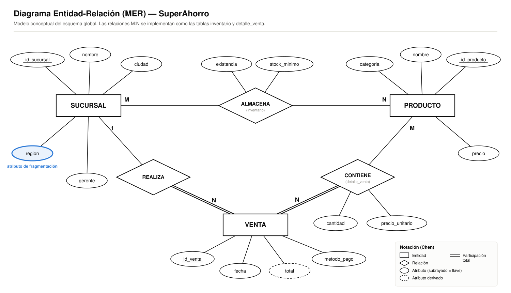
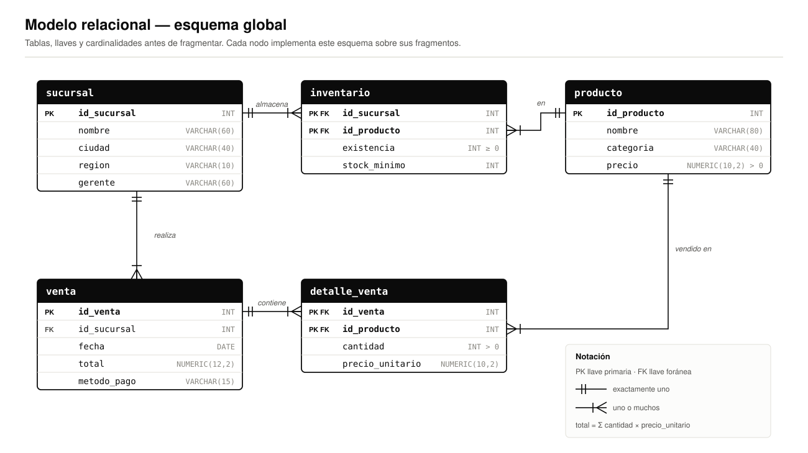
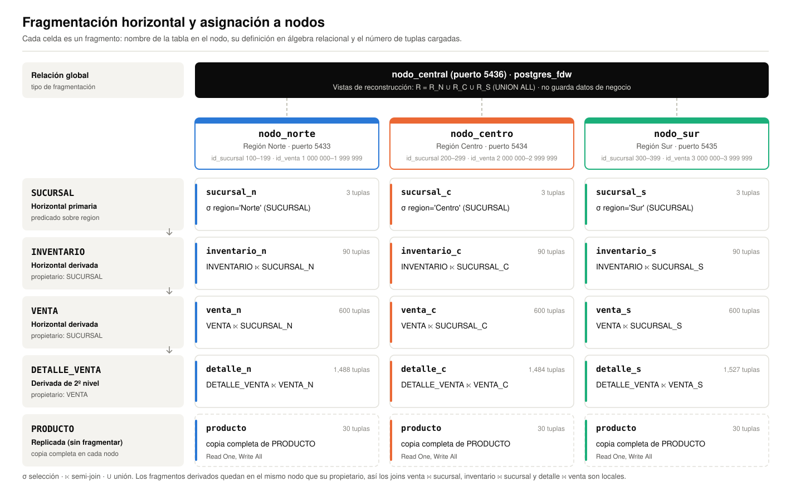

Base de datos distribuida de la cadena de supermercados SuperAhorro
SuperAhorro es una cadena de supermercados con nueve sucursales distribuidas en tres regiones del país: Norte (Mexicali, Tijuana y Monterrey), Centro (Ciudad de México, Guadalajara y Querétaro) y Sur (Mérida, Oaxaca y Cancún). La operación diaria de cada sucursal —registrar ventas, consultar precios y controlar existencias— solo involucra datos de su propia región. En cambio, el corporativo necesita consultas sobre toda la cadena.
El objetivo de este documento es proponer y justificar una fragmentación horizontal del esquema global y su asignación a tres nodos regionales. La propuesta busca que la mayoría de los accesos se resuelvan localmente, que los fragmentos cumplan las reglas de completitud, reconstrucción y disyunción, y que un nodo central pueda reconstruir las relaciones globales para los reportes corporativos.
El modelo conceptual tiene tres entidades: SUCURSAL, PRODUCTO y VENTA. Tiene además dos relaciones de muchos a muchos con atributos propios: ALMACENA, que da lugar a la tabla inventario, y CONTIENE, que da lugar a detalle_venta. La relación REALIZA es de uno a muchos: toda venta pertenece exactamente a una sucursal.


| Relación | Descripción | Tuplas |
|---|---|---|
| SUCURSAL | Tiendas de la cadena y su región | 9 |
| PRODUCTO | Catálogo único de productos con su precio | 30 |
| INVENTARIO | Existencia y stock mínimo de cada producto en cada sucursal | 270 |
| VENTA | Encabezado de cada venta: sucursal, fecha, total y método de pago | 1 800 |
| DETALLE_VENTA | Productos, cantidades y precio unitario de cada venta | 4 499 |
Los supuestos de diseño sobre las aplicaciones que usan la base de datos son los siguientes:
| Aplicación | Se origina en | Datos que usa | Predicado que aplica |
|---|---|---|---|
| A1. Punto de venta | Cada región | SUCURSAL, VENTA, DETALLE_VENTA, PRODUCTO e INVENTARIO de sus propias sucursales | region = 'Norte' | 'Centro' | 'Sur' |
| A2. Control de inventario | Cada región | INVENTARIO de las sucursales de la región | region = … |
| A3. Reportes corporativos | Nodo central | Todas las relaciones, agregadas por región, mes o producto | Ninguno: lee toda la cadena |
A1 y A2 generan la gran mayoría de los accesos y siempre filtran por las sucursales de una sola región. A3 es menos frecuente y necesita la unión de todas las regiones. Por eso conviene fragmentar por región y reconstruir solo para A3.
Los predicados simples que aparecen en las aplicaciones sobre la relación SUCURSAL son:
El dominio del atributo region es {Norte, Centro, Sur}. Lo garantizan las restricciones de cada nodo y la validación del nodo central, que rechaza cualquier otra región.
Sea Pr = {p1, p2, p3}.
Es decir, Pr es el resultado que se obtiene con el algoritmo COM_MIN.
Con tres predicados hay 23 = 8 minitérminos posibles. Las implicaciones pi ⇒ ¬pj (i ≠ j), es decir, que una sucursal tiene una sola región, y el dominio cerrado de region eliminan cinco de ellos:
| Minitérmino | Expresión | Resultado | ¿Se conserva? |
|---|---|---|---|
| m1 | p1 ∧ p2 ∧ p3 | Contradictorio | No |
| m2 | p1 ∧ p2 ∧ ¬p3 | Contradictorio | No |
| m3 | p1 ∧ ¬p2 ∧ p3 | Contradictorio | No |
| m4 | p1 ∧ ¬p2 ∧ ¬p3 | ≡ region = 'Norte' | Sí |
| m5 | ¬p1 ∧ p2 ∧ p3 | Contradictorio | No |
| m6 | ¬p1 ∧ p2 ∧ ¬p3 | ≡ region = 'Centro' | Sí |
| m7 | ¬p1 ∧ ¬p2 ∧ p3 | ≡ region = 'Sur' | Sí |
| m8 | ¬p1 ∧ ¬p2 ∧ ¬p3 | Vacío: no hay otra región en el dominio | No |
| Fragmento | Sucursales (id · ciudad) | Tuplas |
|---|---|---|
| SUCURSALN | 100 Mexicali · 101 Tijuana · 102 Monterrey | 3 |
| SUCURSALC | 200 CDMX · 201 Guadalajara · 202 Querétaro | 3 |
| SUCURSALS | 300 Mérida · 301 Oaxaca · 302 Cancún | 3 |
Para que el nodo de cada tupla se deduzca solo de su llave, a cada región se le asigna un rango de identificadores. Así, cada minitérmino tiene un predicado equivalente sobre la llave primaria:
| Región | Predicado de región | Equivalente sobre id_sucursal | Rango de id_venta |
|---|---|---|---|
| Norte | region = 'Norte' | id_sucursal BETWEEN 100 AND 199 | 1 000 000 – 1 999 999 |
| Centro | region = 'Centro' | id_sucursal BETWEEN 200 AND 299 | 2 000 000 – 2 999 999 |
| Sur | region = 'Sur' | id_sucursal BETWEEN 300 AND 399 | 3 000 000 – 3 999 999 |
Ambos predicados se imponen con restricciones CHECK en cada nodo. El optimizador del nodo central también los usa para localizar las consultas (sección 10).
| Vínculo | Propietario | Miembro | Atributo de join | ¿Se usa para fragmentar? |
|---|---|---|---|---|
| L1 | SUCURSAL | INVENTARIO | id_sucursal | Sí |
| L2 | SUCURSAL | VENTA | id_sucursal | Sí |
| L3 | VENTA | DETALLE_VENTA | id_venta | Sí |
| L4 | PRODUCTO | INVENTARIO | id_producto | No |
| L5 | PRODUCTO | DETALLE_VENTA | id_producto | No |
INVENTARIO y DETALLE_VENTA tienen dos propietarios posibles cada una. Se eligió SUCURSAL para INVENTARIO y VENTA para DETALLE_VENTA, con dos criterios:
| Relación | Norte | Centro | Sur | Total |
|---|---|---|---|---|
| INVENTARIO | 90 | 90 | 90 | 270 |
| VENTA | 600 | 600 | 600 | 1 800 |
| DETALLE_VENTA | 1 488 | 1 484 | 1 527 | 4 499 |
Cada tupla de VENTA referencia exactamente una sucursal (llave foránea no nula), así que cada fragmento VENTAi solo hace join con SUCURSALi. Lo mismo pasa con INVENTARIO y DETALLE_VENTA. El grafo de joins es simple y particionado, y por lo tanto un join global se descompone en tres joins locales que se ejecutan en paralelo:
No se propone fragmentar PRODUCTO. Todas las regiones venden el catálogo completo, así que ningún predicado separa productos que se accedan de forma distinta, y cualquier fragmento resultaría irrelevante. Además, PRODUCTO se lee en cada venta y en cada consulta de inventario, y se modifica poco (altas de productos y cambios de precio).
Por eso se replica completo en los tres nodos. Las lecturas usan la copia local; las escrituras se aplican a las tres copias en una sola transacción (estrategia Read One, Write All).
| Alternativa | Motivo para descartarla |
|---|---|
| Fragmentar SUCURSAL por ciudad (9 fragmentos) | Viola la minimalidad: ninguna aplicación distingue entre ciudades de una misma región, así que esos predicados no son relevantes. Además, habría más fragmentos que nodos. |
| Fragmentar VENTA por fecha (mes o trimestre) | No aporta localidad: cada región consulta ventas de todos los meses, y los joins con SUCURSAL dejarían de ser locales. |
| Fragmentar PRODUCTO por categoría | Las categorías no corresponden a ningún sitio: todas las regiones venden todas las categorías. |
| INVENTARIO derivado de PRODUCTO | Rompe la localidad del join inventario ⋈ sucursal, que es justamente el que usa A2. |
| Fragmentación vertical | Las aplicaciones usan todos los atributos de cada relación juntos. Separar columnas obligaría a reconstruir con joins en casi todos los accesos. |
UNION ALL, que es más barata.Las pruebas de scripts/05_pruebas.sql se ejecutaron sobre los datos cargados:
| Prueba | Regla | Esperado | Obtenido |
|---|---|---|---|
| P1 · Σ fragmentos = global | Completitud | Iguales | 9 = 9 · 270 = 270 · 1 800 = 1 800 · 4 499 = 4 499 |
| P2 · Ventas y detalles huérfanos | Completitud de la derivada | 0 y 0 | 0 y 0 |
| P3 · UNION = UNION ALL | Reconstrucción y disyunción | Iguales | 1 800 = 1 800 |
| P4 · Ids repetidos entre fragmentos | Disyunción | 0 renglones | 0 renglones |
| P5 · Ventas en un nodo de otra región | Corrección de la derivada | 0 · 0 · 0 | 0 · 0 · 0 |
| P6 · Diferencias entre copias de PRODUCTO | Consistencia de la réplica | 0 y 0 | 0 y 0 |
| P7 · Insertar una sucursal del Sur en el nodo Norte | Restricción del fragmento | Error | Error ck_sucursal_n_region |
Cada fragmento se asigna al nodo de la región donde se genera y se usa. Así, A1 y A2 trabajan sin salir de su nodo. La asignación no es redundante, salvo PRODUCTO, que se replica a propósito. El nodo central no almacena datos de negocio: solo tiene las tablas foráneas, las vistas de reconstrucción y el catálogo de localización.

| Fragmento | nodo_norte | nodo_centro | nodo_sur | nodo_central |
|---|---|---|---|---|
| SUCURSALN, INVENTARION, VENTAN, DETALLEN | ✔ | vista | ||
| SUCURSALC, INVENTARIOC, VENTAC, DETALLEC | ✔ | vista | ||
| SUCURSALS, INVENTARIOS, VENTAS, DETALLES | ✔ | vista | ||
| PRODUCTO (réplica completa) | ✔ | ✔ | ✔ | vista |
La propuesta está implementada en PostgreSQL 16 con cuatro contenedores Docker. Cada nodo regional crea sus fragmentos con las restricciones del predicado. El fragmento SUCURSALN y su derivado VENTAN:
CREATE TABLE sucursal_n (
id_sucursal INT PRIMARY KEY,
nombre VARCHAR(60) NOT NULL,
ciudad VARCHAR(40) NOT NULL,
region VARCHAR(10) NOT NULL,
gerente VARCHAR(60),
CONSTRAINT ck_sucursal_n_region CHECK (region = 'Norte'),
CONSTRAINT ck_sucursal_n_rango CHECK (id_sucursal BETWEEN 100 AND 199)
);
-- Derivado: la llave foranea local obliga a que la venta este en el nodo de su sucursal
CREATE TABLE venta_n (
id_venta INT PRIMARY KEY,
id_sucursal INT NOT NULL REFERENCES sucursal_n(id_sucursal),
...
CONSTRAINT ck_venta_n_rango CHECK (id_venta BETWEEN 1000000 AND 1999999)
);
El nodo central accede a los fragmentos con postgres_fdw y define una vista de reconstrucción por relación:
CREATE VIEW venta AS
SELECT * FROM norte.venta_n
UNION ALL SELECT * FROM centro.venta_c
UNION ALL SELECT * FROM sur.venta_s;
-- Localizacion: el optimizador descarta los fragmentos que no pueden tener los datos
ALTER FOREIGN TABLE norte.venta_n ADD CONSTRAINT loc_ven_n
CHECK (id_sucursal BETWEEN 100 AND 199 AND id_venta BETWEEN 1000000 AND 1999999);
Con esas restricciones, una consulta sobre la vista global que filtra por una sucursal se envía solo al nodo que la contiene:
EXPLAIN SELECT COUNT(*), SUM(total) FROM venta WHERE id_sucursal = 100;
Aggregate
-> Foreign Scan on norte.venta_n
Remote SQL: SELECT total FROM public.venta_n WHERE ((id_sucursal = 100))
Los scripts completos están en la carpeta scripts/ del proyecto: 01_esquema_*.sql (fragmentos), 02_datos_*.sql (datos), 03_central.sql (reconstrucción y localización) y 05_pruebas.sql (verificación).
La propuesta fragmenta SUCURSAL horizontalmente con el conjunto completo y mínimo de predicados {region = 'Norte', region = 'Centro', region = 'Sur'}, que da tres minitérminos válidos. A partir de ella se derivan los fragmentos de INVENTARIO, VENTA y DETALLE_VENTA (este último de segundo nivel), y PRODUCTO se replica en los tres nodos.
Con este diseño, las operaciones de cada región, que son la mayoría de los accesos, se resuelven en un solo nodo, y los joins entre relaciones relacionadas son locales gracias a que el grafo de joins es simple. El nodo central reconstruye las relaciones globales para los reportes corporativos sin duplicar datos. Las pruebas de completitud, reconstrucción y disyunción confirman que la fragmentación es correcta.